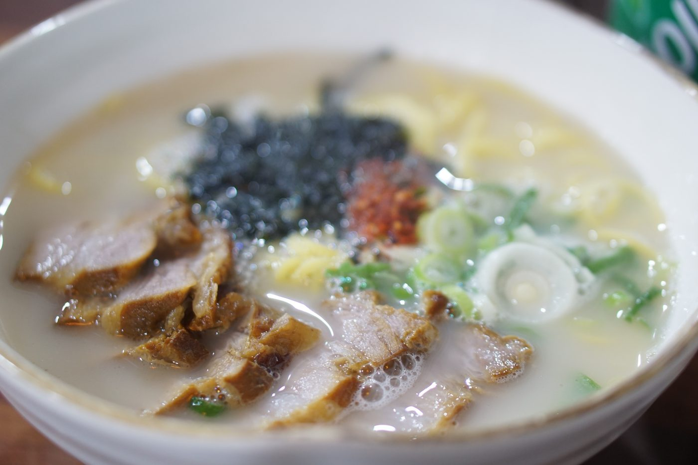
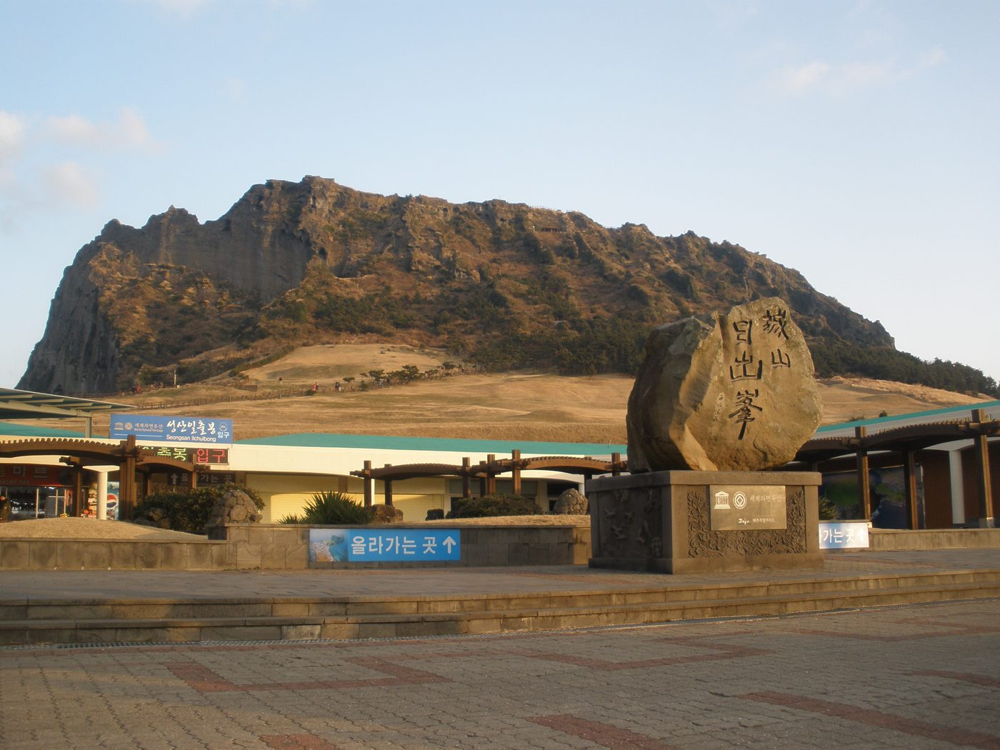
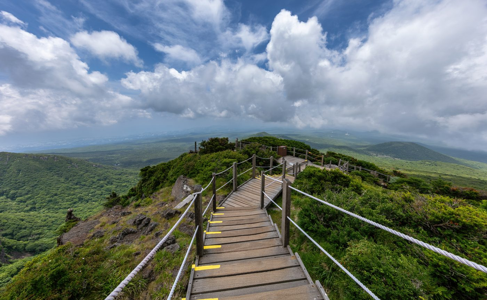
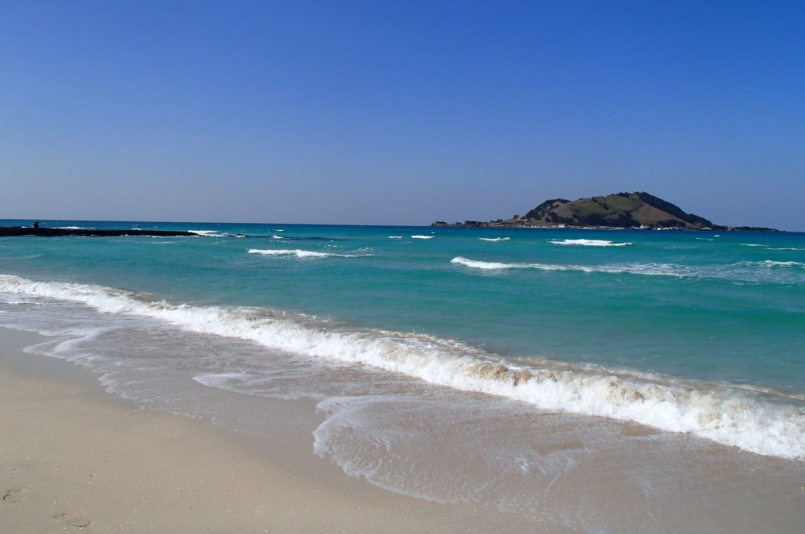
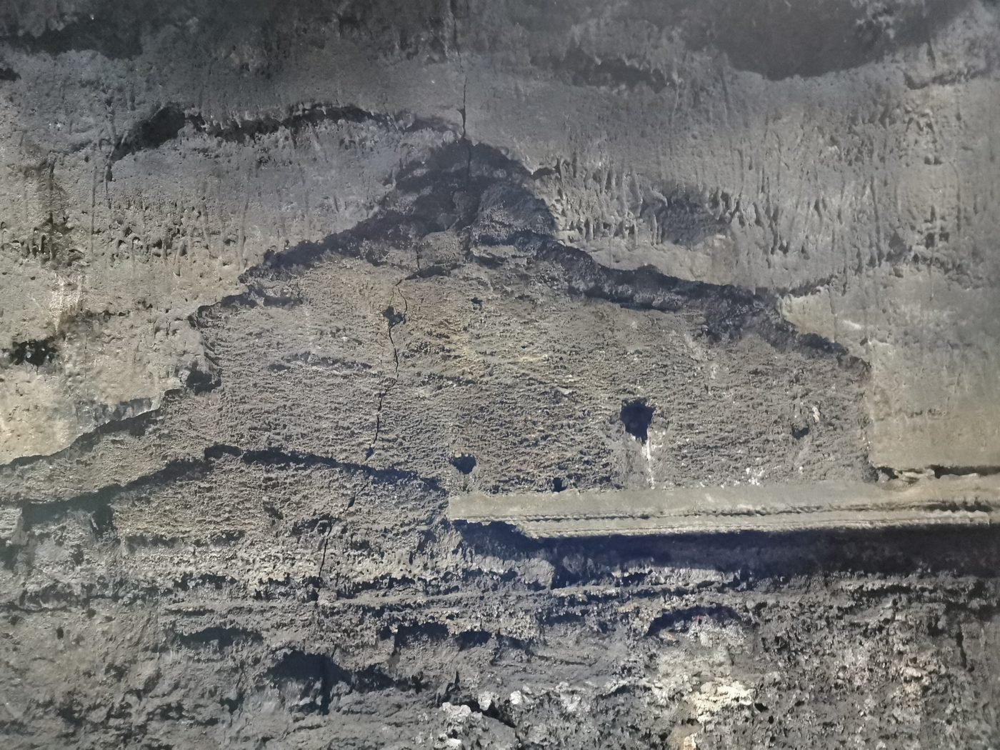
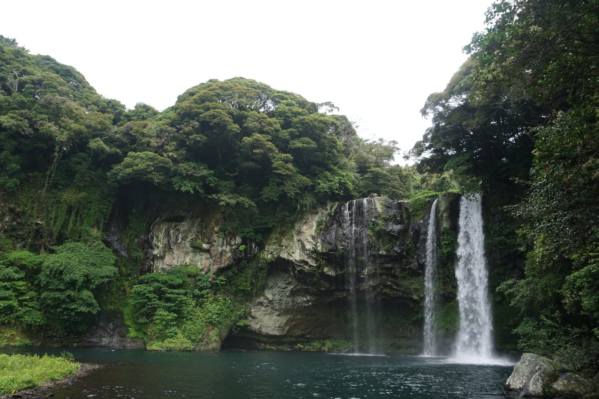
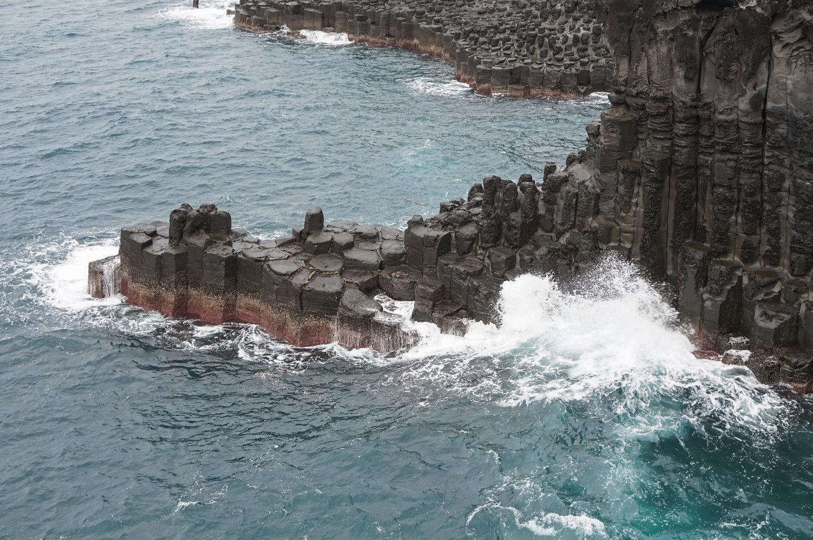

고기국수
제주 고기국수는 돼지뼈와 고기로 우려낸 진한 국물에 소면을 넣어 먹는 제주 고유의 향토 음식입니다. 국수 위에 수육을 듬뿍 올려 내는 것이 특징이며, 뽀얀 국물이 따뜻하고 구수합니다.
제주 시내 칠성로 주변과 동문시장 근처에 오랜 역사를 가진 식당이 많습니다. 아침 식사로도 즐기는 현지인들의 소울푸드입니다.
Jeju Travel Guide
화산이 빚어낸 웅장한 한라산, 에메랄드 빛 협재해변, 그리고 일출의 성지 성산일출봉까지. 자연이 그대로 남아있는 제주의 장면을 소개합니다.
명소 둘러보기화산지형, 해변, 동굴, 폭포까지 — 제주의 대표 자연유산을 모았습니다.

약 5,000년 전 바닷속 화산 분출로 형성된 분화구입니다. 정상에 오르면 탁 트인 동부 해안과 우도가 한눈에 들어옵니다.
세계자연유산
해발 1,950m, 남한에서 가장 높은 산입니다. 영실·어리목 탐방로는 계절마다 다른 풍경을 선사합니다.
국립공원
제주 서쪽의 협재해변은 얕고 투명한 에메랄드 빛 바다로 유명합니다. 맑은 날 비양도가 배경처럼 떠오르는 풍경이 인상적입니다.
해수욕장
총 길이 약 7.4km의 세계 최장급 용암 동굴입니다. 내부에는 용암 기둥·선반·종유석 형태의 지형이 그대로 보존돼 있습니다.
세계자연유산
서귀포에 위치한 높이 22m의 폭포입니다. 아열대 식물이 우거진 계곡 탐방로를 따라 걸으면 폭포 소리가 점점 가까워집니다.
천연기념물
용암이 식으며 생성된 육각형 현무암 기둥이 해안을 따라 늘어서 있습니다. 파도가 기둥에 부딪히는 장관이 장관입니다.
지질 명소제주 흑돼지와 고기국수, 제철 해산물까지. 섬에서만 맛볼 수 있는 음식을 소개합니다.

제주 고기국수는 돼지뼈와 고기로 우려낸 진한 국물에 소면을 넣어 먹는 제주 고유의 향토 음식입니다. 국수 위에 수육을 듬뿍 올려 내는 것이 특징이며, 뽀얀 국물이 따뜻하고 구수합니다.
제주 시내 칠성로 주변과 동문시장 근처에 오랜 역사를 가진 식당이 많습니다. 아침 식사로도 즐기는 현지인들의 소울푸드입니다.
제주의 자연과 풍경을 담은 영상들을 15초마다 자동으로 순환합니다.